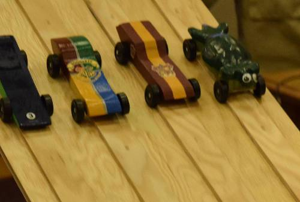
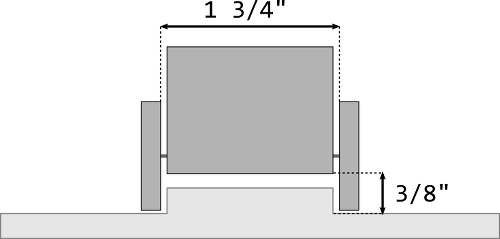
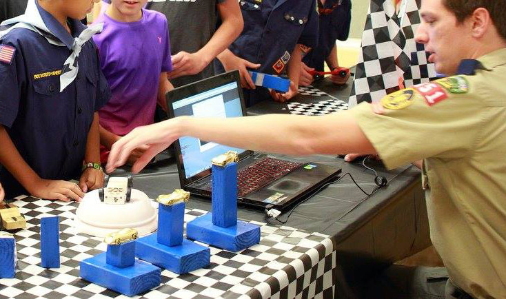
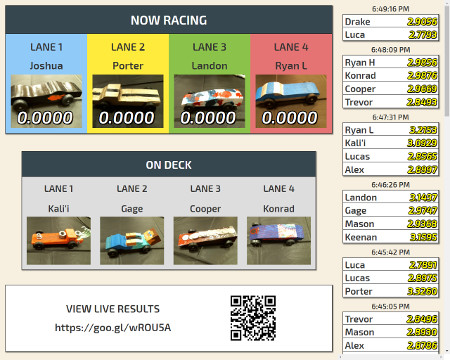

Building a pinewood derby car is fun! You should have a grownup guide you, but it is best if you do the work yourself. It can take a lot of work to make a pinewood derby car, but while you make it, you'll learn how to create a design, how to use tools safely, and how to finish (sand and paint) your car.
First, get your pinewood derby car kit. Then, with a grown-up, follow these basic instructions:
Make sure to remember these important tips as you design and build your car:
The track is 32 feet long and 4 feet high. Cars run along guide strips that are 1-5/8" wide and 1/4" high (about the width of a pencil). Do not glue weights to the bottom of your car, as these could drag across the guide strips and slow down your car.


Recommended minimum clearances for pinewood derby cars. Do not glue weights to the bottom of your car, as these could drag against the guide strips.
When you arrive at the pinewood derby, you'll have a chance to try your car out on the track before the race. Be careful that you do not drop your car and risk damaging it. You can also add a small amount of graphite to your wheel axles. Your car must not weigh more than 5 ounces, so you should weigh your car before the race to make sure it's not too heavy.

Before the race, everyone will need to check-in. We'll weigh and take a picture of your car.
Before the race, everyone will need to check-in and have their car officially weighed. We'll also take a picture of your car. After your car has its picture taken, you can take it to the "garage" to wait for your turn to race. When it's your turn to race, you'll see your name and your car on the projector screen. Take your car to the starting line. After your car goes down the track, take it back to the garage. Everyone will get to race their car four times, once on each lane.

When it's your turn to race, your name and car will appear on the projector screen.
You might not get to race against each of the other cars. That's OK. We record your car's time for each race, and use that to see which car is the fastest. But remember that some awards, such as Best Design or Judge's Choice, often go to cars that are the best looking or the most creative, but that are not necessarily the fastest.